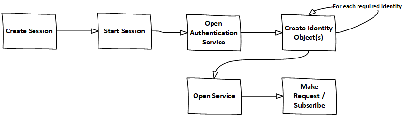

Introduction¶
The IOI API Server provides Bloomberg users with the ability to publish IOIs into Bloomberg and subscribe IOIs in Equities and Derivatives using Bloomberg API
The IOI API Server for subscribing requires separate authorization by the publishing broker on top of the Bloomberg authorization.
Note
IOI API users will need the following steps completed before using the IOI API service.
- Signed EMSxNET Order Originator Agreement.
- Install serverapi.exe and register with Bloomberg.
- Enable IOI API per UUID by the Global EMSX Trade Desk for Test (Beta) and Production.
- To get access to IOI API in UAT and production, please click <Help><Help> on
EMSX<GO>.- Download Bloomberg Desktop API v3 SDK from
WAPI<GO>in Bloomberg terminal.
To get access to IOI API in UAT and production, please click <Help><Help> on EMSX<GO>.
Support¶
For all IOI functionality and IOI API techincal inquires please contact the EMSX Trade Desk. They are available 24/6 and please ensure you provide your Bloomberg UUID.
By Bloomberg Terminal:
HELP 2x (F1 key) on your terminal, ask to speak to the EMSX Trade Desk HELP 1x (F1 key) on your terminal, to compose an email message to the EMSX Trade Desk.
By email:
By Phone:
Please call your local global customer support number and ask to speak to the EMSX Trade Desk
| +1-212-617-2000 | +44-20-7330-7500 | +65-6212-1000 |
How to install serverapi.exe¶
Please follow the following steps to install and register the installer with Bloomberg Enterprise Solutions with the assistance from EMSX Implementation team.
The following example is based on the windows environment and thus there will be slight variations when installing from linux or solaris operating system.
- Run serverapi.exe
C:\temp>serverapiinstaller.exe
- You will see the following message
C:\temp>serverapiinstaller.exe
logging to C:\temp\install.2016102610.152444.log
Bloomberg ECD Installer for Windows (32-bit)
Version 3.2.2.0
Warning: This program is protected by copyright law and international treaties.
Unauthorized reproduction or distribution of this program, or any portion of
it, may result in severe civil and criminal penalties, and will be prosecuted
to the maximum extent possible under law.
logging to C:\temp\install.2016102610.152444.log
Bloomberg ECD Installer for Windows (32-bit)
Version 3.2.2.0
Warning: This program is protected by copyright law and international treaties.
Unauthorized reproduction or distribution of this program, or any portion of
it, may result in severe civil and criminal penalties, and will be prosecuted
to the maximum extent possible under law.
Would you like to continue? (Y/N):
- Type:- Y
Would you like to continue? (Y/N): y
Checking connectivity to Bloomberg ...
a) via Bloomberg Network to [ Hostname = 208.134.161.62 Port = 8194 ] ...
Succeeded.
[ Hostname = 208.134.161.158 Port = 8194 ] ...
Succeeded.
[ Hostname = 208.134.161.18 Port = 8194 ] ...
Succeeded.
[ Hostname = 208.134.161.179 Port = 8194 ] ...
Succeeded.
b) via the Internet to [ Hostname = api1.bloomberg.net Port = 8194 ] ...
Succeeded.
[ Hostname = api2.bloomberg.net Port = 8194 ] ...
Succeeded.
[ Hostname = api3.bloomberg.net Port = 8194 ] ...
Succeeded.
[ Hostname = api4.bloomberg.net Port = 8194 ] ...
Succeeded.
[ Hostname = api5.bloomberg.net Port = 8194 ] ...
Succeeded.
[ Hostname = api6.bloomberg.net Port = 8194 ] ...
Succeeded.
[ Hostname = api7.bloomberg.net Port = 8194 ] ...
Succeeded.
[ Hostname = api8.bloomberg.net Port = 8194 ] ...
Succeeded.
Which of the above routes will you use to connect to Bloomberg? (a/b):
- Select the appropriate network option (private vs. public/internet)
Which of the above routes will you use to connect to Bloomberg? (a/b): b
Bloomberg Network connectivity unavailable. Connecting via the Internet.
Select Product Class
1) blpddm Software that provides development access to distribute data locally or contribute data to Bloomberg.
2) ServerApi Provides access to Bloomberg real-time streaming and static data
0) Quit
Please enter selection:
- Select:- 2 for Server API
Please enter selection: 2
Installation path:
'C:\'
Use this path? (Y/N/Q):
- Select:- Y
Use this path? (Y/N/Q): y
Downloading latest installer ...
done.
logging to C:\temp\install.2016102610.152444.log
Beginning new install ...
Note
If the default port is already being used by a different service it may show the following message:
*** WARNING: Port conflict detected with other service.
The port of the Desktop will conflict with the ServerApi should installation proceed. If you still want to install
ServerApi, you will need to specify a different port number.
Do you want to continue with the installation? (Y/N) [N]:
- Select:- Y and enter the port
Do you want to continue with the installation? (Y/N) [N]:y
Please enter ServerApi listen port: [8294]:8294
- Select the version:-
Versions available for ServerApi
1) 3.46.6.0 Windows ServerAPI 2014-07
2) 3.48.8.1 Windows ServerAPI 2014-09
3) 3.48.9.1 Windows ServerAPI 2014-11
4) 3.50.7.1 Windows ServerAPI 2015-01
5) 3.56.4.1 Windows ServerAPI 2015-04
6) 3.60.0.1 Windows ServerAPI 2015-07
7) 3.64.5.1 Windows ServerAPI 2015-10
8) 3.70.0.1 Windows ServerAPI 2016-01
9) 3.72.2.1 Windows ServerAPI 2016-04
10) 3.82.3.1 Windows ServerAPI 2016-10
11) 3.46.6.0 Windows64 ServerAPI 2014-07
12) 3.48.8.1 Windows64 ServerAPI 2014-09
13) 3.48.9.1 Windows64 ServerAPI 2014-11
14) 3.50.7.1 Windows64 ServerAPI 2015-01
15) 3.56.4.1 Windows64 ServerAPI 2015-04
16) 3.60.0.1 Windows64 ServerAPI 2015-07
17) 3.64.5.1 Windows64 ServerAPI 2015-10
18) 3.70.0.1 Windows64 ServerAPI 2016-01
19) 3.72.2.1 Windows64 ServerAPI 2016-04
20) 3.82.3.1 Windows64 ServerAPI 2016-10
0) Quit
Please enter version of ServerApi that you want to install:
- Select the latest:-
Please enter version of ServerApi that you want to install: 20
Downloading ServerApi components ...
Enter other information:-
Enter the following information:
Country (e.g., USA): State (e.g., NY): City or Town (e.g., New York): Company Name (e.g., Bloomberg L.P.): Department Name (e.g., Equity Trading):
Finished:-
Enter the following information:
Country (e.g., USA): USA
State (e.g., NY): NY
City or Town (e.g., New York): New York
Company Name (e.g., Bloomberg L.P.): Bloomberg LP
Department Name (e.g., Equity Trading): EMSX
Creating certificate ...
done.
Registering server ...
done.
Do you want to install ServerApi as a Windows Service? (Y/N): y
Installing ServerApi as a windows Service...
service ServerApi configured for restart on first error
done
done.
*** Please reboot your computer for changes to take effect ***
Call Bloomberg's Global Customer Support at +1 (212) 318-2000 and ask for the
Global Installs desk. The Bloomberg representative will ask you to read your
registration number over the phone four characters at a time.
Your registration key is:
321c-5ad5-7fa8-2954-1930-abb0-b64c-ecaf-1505-64d4
Note
Once the registration process is completed. EMSX Implementation team globally will assist with configuring the Server Side EMSX API with various execution destinations per client request.
Creating User Identities¶
In the server environment, the user identities must be created and cached prior to the making requests. Therefore, the process would look as follows:-
Note
Note: The IOI API Server code samples demonstrate how to create identity object.
The first new step is to open the authentication service. This is done in the same way as for any other service in the Bloomberg API. For example:-
d_authsvc = "//blp/apiauth";
session.openServiceAsync(d_authsvc);
Once the service is opened, we need to create and send an authorization request. To create an identity for a specific user, you will need the AuthID for the user. This is the name the user is known by in the EMRS system for your server. The values for these names will have been agreed with you as part of the implementation of the server, or subsequently when adding a new user. Also, an IP address is required. The only requirement for this IP address is that it is unique amongst all the identities generated for a session. You can create and send the request as follows:-
private Identity userIdentity;
*
*
*
Service authService = session.getService(d_authsvc);
Request authReq = authService.createAuthorizationRequest();
authReq.set("authId", authID);
authReq.set("ipAddress", appIP);
userIdentity = session.createIdentity();
authRequestID = new CorrelationID();
try
{
session.sendAuthorizationRequest(authReq, userIdentity, authRequestID);
}
catch (Exception e)
{
System.out.println("Unable to send authorization request: " + e.getMessage());
}
In the above code, you can see that an empty identity object is created using session.createIdentity(). This is the object that will be populated once successful authentication has been achieved, and it is the object that will need to be cached.
We will receive a Response event for the Authentication service. In the example below, we use a CorrelationID to identify messages from the Authentication service, and check for success or failure:-
if(msg.correlationID()==authRequestID) {
if(msg.messageType().equals(AUTHORIZATION_SUCCESS)) {
System.out.println("Authorised...Opening IOI service...");
System.out.println("Seat Type: " + userIdentity.seatType().toString());
session.openServiceAsync(d_service);
} else if(msg.messageType().equals(AUTHORIZATION_FAILURE)) {
System.out.println("Authorisation failed...");
System.out.println(msg.toString());
wait(1000);
// Automatically retry...
sendAuthRequest(session);
} else {
System.out.println("Unexpected authorisation message...");
System.out.println(msg.toString());
}
}
When we receive the successful authorization, we can continue with opening the IOI service. If multiple authorization requests have been sent, for a number of different UUIDs, it is necessary to wait for all the responses before being able to use all the identity objects.
In the above code, you will see that we examine the ‘seatType’ of the identity. The seat type in this case will be either BPS or non-BPS.
Using User Identities¶
In the server environment, there is no Bloomberg terminal, and therefore no implied user can be identified. Moreover, the server is capable of connecting to any number of IOI user identities, simultaneously. Therefore, the application making the call must indicate which user is the intended target. This is done through the creation and use of Identity object.
An Identity object represents a specific Bloomberg UUID. Once created, an Identity object can be cached for 24hrs, and used with every sendRequest() and subscribe() call.
Identity objects are live, that is they remain connected to Bloomberg in real-time and are capable of receiving events. We recommend that an identity is recreated every 24hrs, to ensure that it picks up the latest changes to any user settings, including access to IOI<GO>.
Migrating the existing desktop application call to a server application simply involves changing all sendRequest() and subscribe() calls to include the appropriate identity, as follows:-
DAPI:
session.sendRequest(request, requestID);
session.subscribe(subscriptions);
Server:
session.sendRequest(request, Identity, requestID);
session.subscribe(subscriptions, Identity);